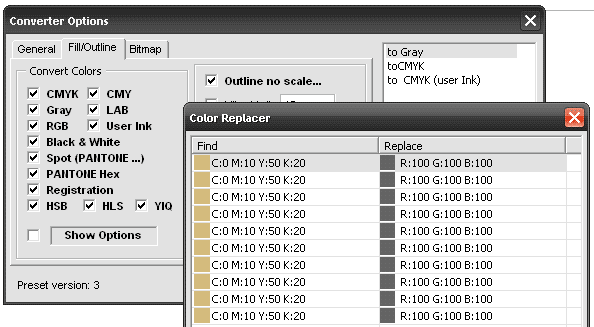
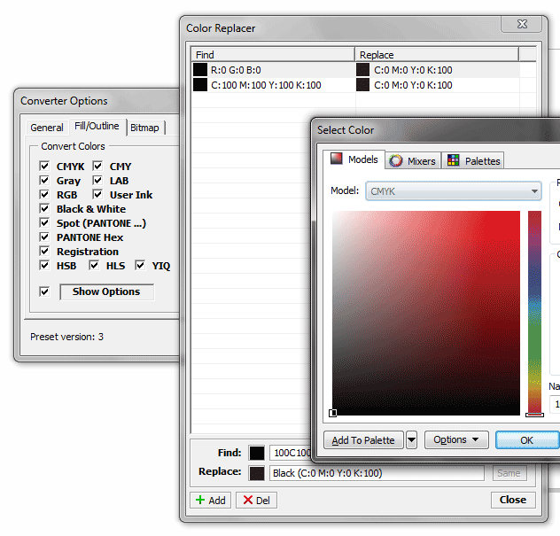

CdrPreflight, что добавить?
Sancho / 25.08.2009, 12:19/00:41
Форум:
Вообщем, настало время сбора ваших пожеланий :)
Что добавить или поправить в следующей версии макроса?
Что добавить или поправить в следующей версии макроса?
Time to collect your suggestions :)
What to add or improve in the next version of the macro?
ilja24, как нужно настроить ЦМС чтобы чёрный РГБ конвертировался (через макрос) не в чёрный СМИК? :)
Доп список, в котором можно добавлять/удалять цвета для замены.
Однако в пресет можно сохранить только использовать этот список или нет. Сам список в пресет нельзя будет сохранить. Кто что думает?
Во время работы макроса, если опция пользовательской замены активна, то макрос будет проверять цвет на наличие в списке поиска. Если таковой есть то заменять на заданный, а если нет - как обычно.
А то попадают на печать отдельной плашкой, а это неправильно.
2. Бывают разные проблемы со слоями. Иногда горе-дизайнеры делают гидлайны не на гидлайновском слое, а на простом, назначают слою атрибут "непечатный". Иногда другие дизайнеры на второй слой помещают сканированный макет старой визитки, назначают слою атрибут "непечатный", а потом обводят в векторе. Я так понимаю, скрипт автоматом делает все слои, кроме гидлайновских, видимыми и печатными, а не надо бы так просто подходить к этой задаче. В первом случае автоматом будут напечатаны (или экспортнуты в епс). Во втором битмеп, по которому обводили - попадет в печать. Особо надо предупреждать о слоях, которые имеют атрибут "печатный, но невидимый". В общем как-то надо проработать.
Логика думаю такая.
а. опционально вообще убирать гидлайны из макеты. Мне ни разу в жизни не понадобились чужие, да и свои.
б. если еще в макете есть слои с объектами, у которых нет одного из атрибутов (печатный, видимый), то в обоих случаях надо предупреждать. А человек уже вручную будет разбираться.
3. Кстати да, хорошо бы галку иметь, чтобы цвет смук 100-100-100-100 автоматом менять на 0-0-0-100 и ргб 0-0-0 на 0-0-0-100 смук.
то, что я имел ввиду
А по поводу замены цвета, думается что то в этом роде:

Был (и есть) такой макрос -- увеличение всех обводок в макете до указанной величины (те которые меньше )
Сейчас только "констатация" без конвертации (параметр Outlie Width)

Ещё по ходу возникла мысль:
Есть паразитные оттенки иногда в цветах (например 2 процента какой ни будь краски), preflight это дело ловит и отображает в параметре Color Control,
настраивается он в общих настройках
Так вот, думаю добавить в конвертр очистку таких паразитных оттенков. Надо или нет?
А это ещё с самых первых версий есть :)
Symbol, Dimension, PoweClip, Effect, Text и Bitmap shapes, Fill, Outline и MeshFill.
Было бы неплохо самому задавать порядок обработки
Страницы